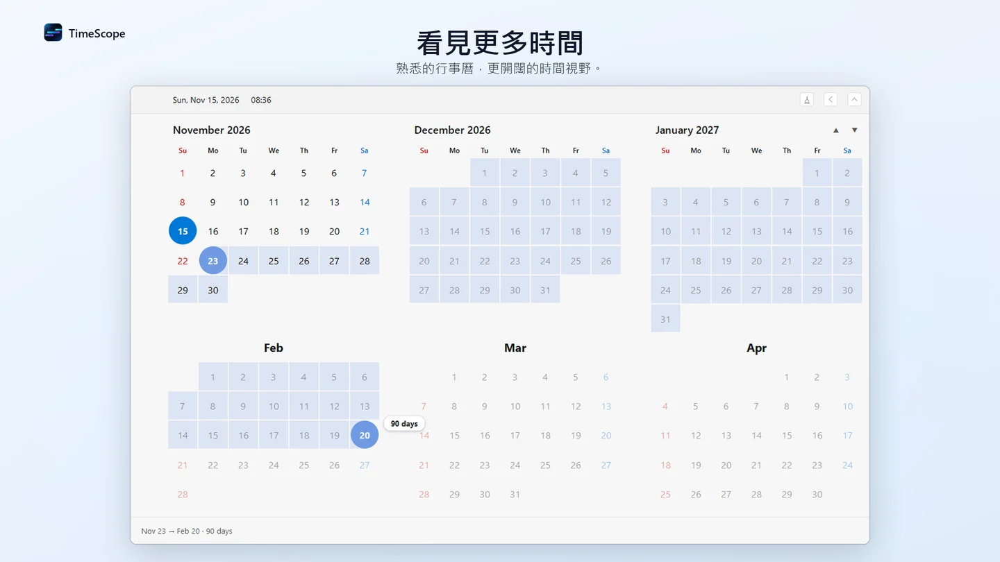
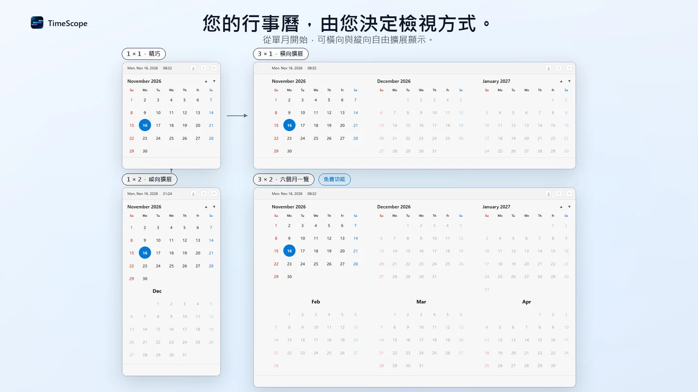
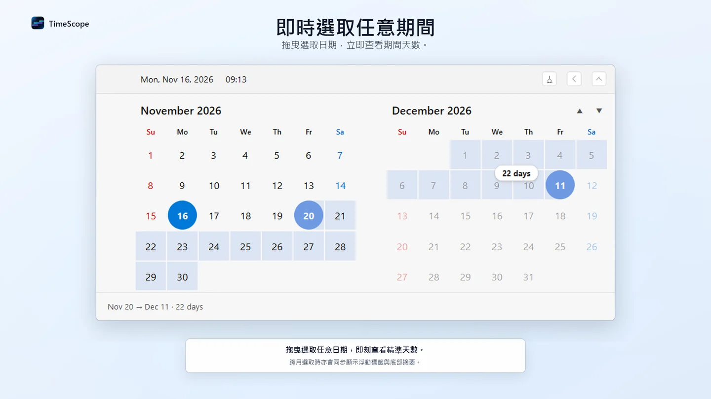
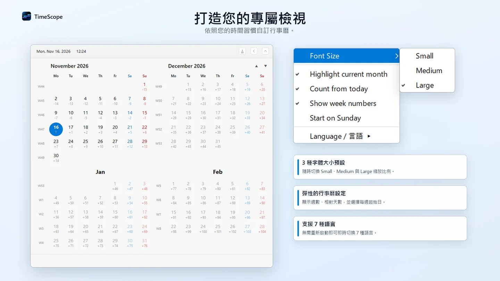
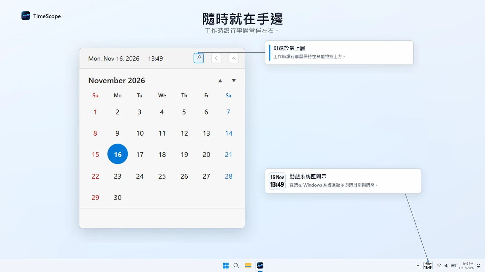

一次看見更多月份
從精巧的單月行事曆開始，依可用視窗與螢幕空間橫向與縱向擴展顯示更多月份。
專為 Windows 設計的輕量級桌面行事曆，協助您同時檢視多個月份、選取日期區間並一目了然掌握天數。

專為快速瀏覽日期、計算區間天數與桌面日常參考而設計。
從精巧的單月行事曆開始，依可用視窗與螢幕空間橫向與縱向擴展顯示更多月份。
拖曳選取任意日期區間，浮動標籤與底部摘要會立即顯示精確天數，跨月選取也一樣順暢。
以一次性應用程式內購買解鎖多區間比較、多螢幕顯示選擇與自訂節假日與工作日。
了解 TimeScope 如何協助您一覽更長的時間跨度、即時統計日期區間，並更清晰地進行規劃。
所有核心行事曆功能皆免費提供，專注於時間檢視與天數掌握，無行程排程干擾。
善用您的可用視窗與螢幕空間，自由橫向或縱向擴展所顯示的月份數量。

不必手動數日子，拖曳即可立即查看旅行、專案或兩個重要日期之間的精確天數。

無需重新啟動即可從選單即時調整每週起始日、時間提示與介面語言。

將行事曆釘選於其他視窗上方，並透過動態 Windows 系統匣圖示一眼查看今日日期與時間。

核心功能全面免費。若需要多區間對比與多螢幕設定，可於應用程式內透過 Microsoft Store 升級。
包含所有核心多月檢視、日期區間選取與桌面個人化功能。
可於 TimeScope 應用程式內透過 Microsoft Store 一次性買斷解鎖。
TimeScope Pro 為一次性應用程式內購買（無需訂閱），於應用程式內透過 Microsoft Store 解鎖（基準價格 $4.99 USD，各地區幣別與稅率可能有所不同）。
來自 TimeScope 實機畫面的真實截圖，完整呈現免費版與 Pro 功能。
同時檢視多個月份的桌面行事曆畫面，並展示連續 90 天的日期區間選取效果。
立即前往 Microsoft Store 免費取得適用於 Windows 10 與 Windows 11 (x64) 的 TimeScope – Visual Calendar。
從 Microsoft Store 取得